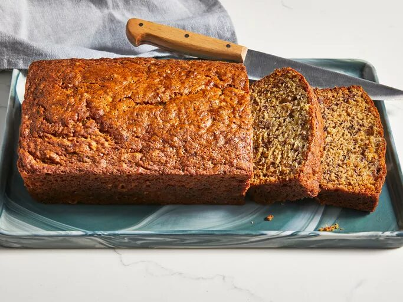

Home
Banana Bread

Description
This banana bread is quick and easy to prepare, and everyone always comes back for seconds!
Ingredients
- 3 ripe bananas, mashed
- 1 cup white sugar
- ¼ cup melted butter
- 1 egg
- 1 ½ cups all-purpose flour
- 1 teaspoon baking soda
- 1 teaspoon salt
Steps
- Gather all ingredients. Preheat the oven to 325 degrees F (165 degrees C). Grease a 9x5-inch loaf pan.
- Combine bananas, sugar, butter, and egg in a bowl. Whisk flour and baking soda together in a separate bowl; stir into banana mixture until batter is just mixed.
- Stir in salt; transfer batter to the prepared loaf pan.
- Bake in the preheated oven until a toothpick inserted into the center comes out clean, about 1 hour.
- Enjoy!